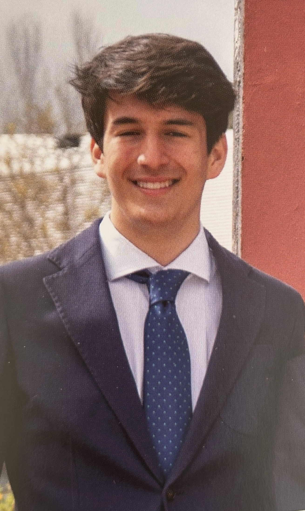
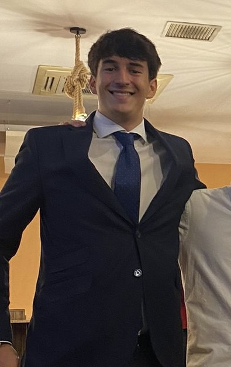

About me (Units 2 and 3)
As a computer engineering student, I am driven by a commitment to innovation, problem-solving, and common good. I am learning to balance technical skills like programming and hardware design with creativity, teamwork, and ethical awareness. My focus is on understanding how technology can address real-world challenges and improve lives. With curiosity and a dedication to learning, I aim to contribute to meaningful advancements in technology while preparing for a future in this dynamic field.
Curriculum
- About me: I am a first-year computer engineering student at Universidad Francisco de Vitoria (UFV). I am looking to build practical skills and gain experience in the technology industry. I am eager to learn and work hard in any opportunity that helps me grow and improve.
- Education: I have been a student in the Colegio Virgen de Europa (CVE) from 2009 to 2024. In this institution, I have undergone every step of my education from kindergarten to bachillerato, taking the EVAU test as a student here. Now I'm studying computer engineering at Universidad Francisco de Vitoria (UFV).
- Skills:
- Teamwork: Collaborate effectively with others, contribute ideas, and support team goals.
- Communication: Express ideas clearly, listen actively, and adapt to different audiences.
- Time Management: Prioritize tasks, meet deadlines, and balance multiple responsibilities.
- Leadership: Take initiative, guide teams, and encourage collaboration and participation.
- Idioms: I can speak, read, and write in two languages: Spanish and English. I feel comfortable using both in different situations, whether it's for work, social interactions, or everyday conversations.
- Volunteer experience:
- Collaboration in delivering food to a food bank for people in need in Vallecas (2023)
- I have participated and collaborated in charity races at my school to raise money for the construction of schools or wells in villages in Africa.
- Contact:


Miguel Velasco Pasamontes


Social Media


Social Media

Contact